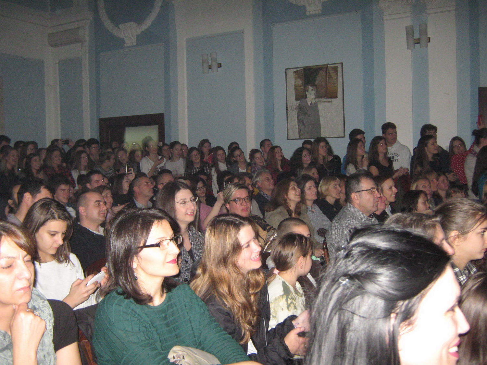
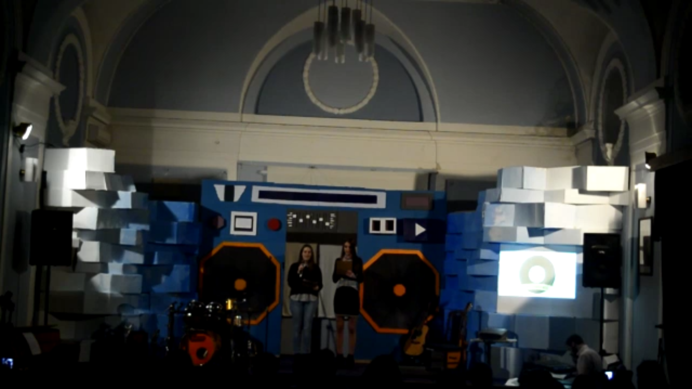

Copyright©
Tomislav Bakic 2016.
Die dreizehnte englische Show im Gymnasium in Uzice am 24. November 2016 hat bestimmt die Grenzen aller bisherigen Shows verschoben, zumindest in der Anzahl der teilnehmenden Studenten. Etwa 60 von ihnen arbeiteten hart für etwa zwei Monate als Sänger, Spieler, Designer der Bühne, Designer des Plakats, Designer von Einladungen ... Produzenten von Genres Clips, technische Unterstützung, Chorsänger, koordinierten alles selbst mit minimaler Aufsicht ihrer Lehrer. Die Organisation war auf hohem Niveau, professionell gestaltet und mit großer technischer Hilfe. Nicht jeder, der diese Show sehen wollte, konnte diesen kleinen Veranstaltungsort für das Ereignis von solchem Ausmaß betreten!

Dieses Projekt war eine bemerkenswerte Gelegenheit, Kreativität auszudrücken und die Grenzen zu vertiefen. Wir haben etwas gemacht, dass diese Schule noch nie gesehen hat. Das Entwerfen der Bühne war einfach im Vergleich zum Bauprozess. Trotzdem hatten wir eine unglaubliche Zeit dabei. Ein Teil dieses Projektes zu sein, machte mich sehr stolz. Ich bin froh, in der Lage zu sein, so etwas zu haben, worauf ich zurückblicken kann, wenn ich das Gymnasium beende. Tolle Erfahrung!

Seit Anfang wollten wir eine "ernste" Show machen, an die man sich erinnern wird. Wir haben es sorgfältig geplant und uns daran gehalten. Als wir anfingen, gab es nicht viele Leute, aber als die Zeit verging, wurde die Zahl erhöht. Im November haben wir die Szenografie begonnen und wir hatten bereits einen Plan, den Jelena und ich schon gemacht haben. Die Schule hat uns sehr geholfen und uns die Materialien gegeben. Wir verbrachten jeden Tag in der Schule und bauten die Bühne auf. Die Show war super. Die Bühne war großartig, die Leute füllten den Raum, und die Musiker waren super. Die Sieger waren Metalheads mit Lied Iron Man. Besonderen Dank an unsere technische Unterstützung, Prosa, Kojo und Ziljo. Ich möchte mich bei allen bedanken, vor allem bei den Mitgliedern der Jury und allen Wettbewerbern für eine tolle Nacht.
Nach 15 Minuten Abstimmung und nach dem Show- Teil des Programms entschied Jury sich! Die Sieger von United Sounds of Music waren "Short of time" mit dem Song Ironman.

Die Atmosphäre war elektrisch und die Luft war voller Liebe und Aufregung. Das ganze Ereignis war unglaublich gut organisiert. Es gab 12 Gruppen, die 12 verschiedene Genres der Musik vertreten haben. Zwischen ihren Auftritten konnten wir kurze Clips über das folgende Genre sehen, und es machte die Zeit inzwischen noch angenehmer. Die Menge war wirklich bereit zu feiern, die Stimmung war unglaublich! Drei Jurymitglieder kündigten den Sieger an. Der beste Teil dieser Nacht war, als alle Gruppen auf die Bühne kamen und zu feiern begannen. Jeder war so glücklich und es war egal wer der Gewinner war, weil jeder eine tolle Zeit hatte! Sie hatten so viel Spaß, dass wir im Publikum auf der Tanzfläche mitmachen wollten. Wieder einmal war die Nacht ein voller Erfolg und wir freuen uns auf die nächste!
Wenn es um die technische Seite dieser Veranstaltung geht, war es kein Zuckerschlecken. Diesmal war es anders als niemals bis jetzt. Es war die erste Veranstaltung, bei der das Tech-Team hinter der Szene stand, was für uns zusätzliche Probleme verursachte, aber eine gute Verbesserung für das Gesamtbild war. Eine meiner Aufgaben war, ein kurzes Video für jedes der zwölf Genres zu schaffen und sie vor Auftritten zu zeigen. Zuerst schien es ziemlich einfach, aber es stellt sich heraus, dass es nicht so einfach ist, ein ganzes Genre mit drei Liedern darzustellen. Ein weiteres Problem war, mit allen Musikern synchronisiert zu bleiben , auch wenn etwas Unterwartetes passiert, wie z.B. improvisierte Song-Teile und verlängerte Aufführungen. Zum Glück konnten wir alles schaffen und am Ende kann ich sicher sagen, dass wir mit diesem Wettbewerb die Dinge auf eine neue Ebene gehoben haben!

Während der Nacht ist eine PP-Präsentation gelaufen. Ich und mein Kumpel Alexa waren dafür verantwortlich. Wir machten die Präsentation, die verschiedene Videos und Bilder enthielt, die sich auf das Ding bezogen, das auf der Bühne passierte. Es dauerte eine Menge Zeit, um es richtig zu machen, und eine Menge Übung, um das Timing der Folien zu meistern. Am Ende haben sich die Übung und die harte Arbeit gelohnt und es war wirklich eine einmalige Erfahrung für das gesamte Team und ich bin mir sicher, dass das Publikum das Gleiche empfand
Ich war einer der Teilnehmer in dieser Show. Ich und meine Freunde sangen ein Lied von Jessie J "Wild". Ich bin sehr zufrieden, denn der wichtigste Teil der Vorbereitungen für die Show war der Prozess selbst, der sehr produktiv war, und wir haben uns in allen Abschnitten gegenseitig geholfen, wir sind enger geworden und ich habe viele neue Freunde getroffen. Ich freue mich auf die Teilnahme an neuen Projekten!

Ich hatte eine Menge Spaß bei der Moderation von United Sounds of Music und ich habe auch viel aus dieser Erfahrung. Ich habe alles von unseren Proben bis zur eigentlichen Show genossen. Es war wunderschön.
Ich war sehr aufgeregt, an der Show teilzunehmen. Da ich ein Neuling bin, war das eine große Chance, meine Band "Kratki sa vremenom" ("Short of time") der ganzen Schule vorzustellen. Sobald wir auf die Bühne gingen, fühlten wir uns, als wären wir dafür geboren. Alle schrien, jeder hat uns geliebt. Ich freue mich auf weitere Shows dieser Art, wer weiß, wo wir am Ende kommen können.